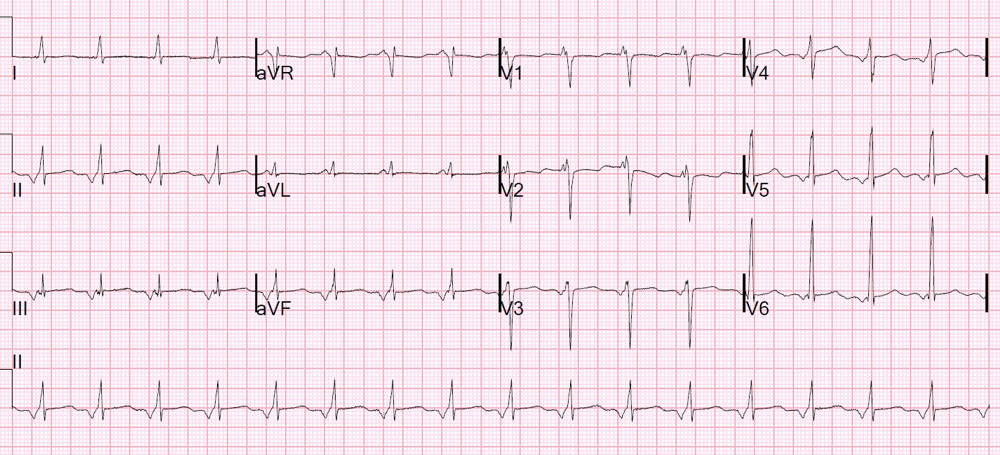
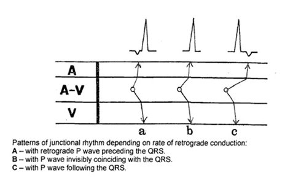
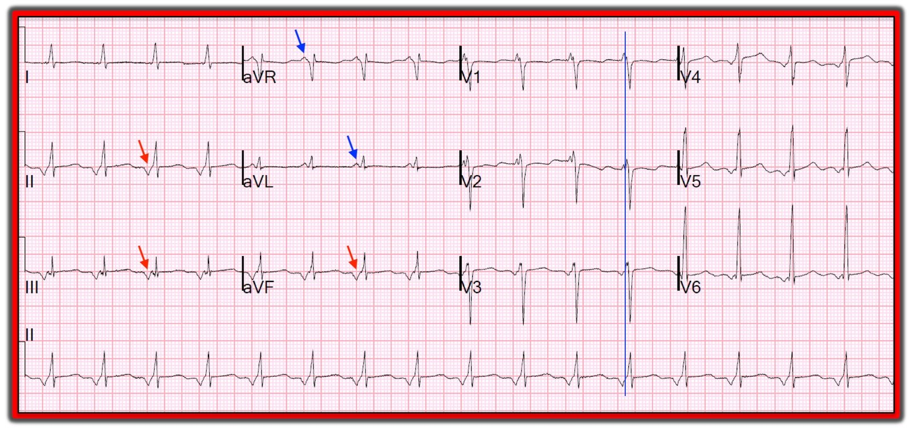
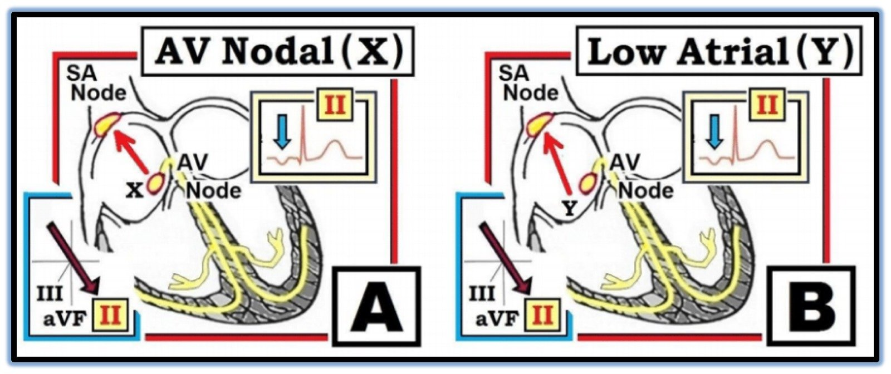
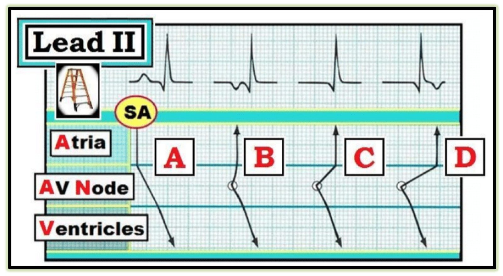

28/01/2019 — Chuyện gì đang xảy ra ở đây?? (Máy tính đọc là “STEMI” và “Chậm dẫn truyền trong thất”!!)
Bản dịch tiếng Việt của bài "What is going on here?? (The computer called it “STEMI” and “Intraventricular Conduction Delay”!!)" – Dr. Smith’s ECG Blog. Giữ nguyên toàn bộ 7 hình ảnh của bản gốc.
Đồng nghiệp của tôi nhờ tôi đọc điện tâm đồ này vì thuật toán Veritas đã kết luận là “STEMI” và chậm dẫn truyền trong thất (Intraventricular Conduction Delay, IVCD), còn anh ấy thì không hiểu vì sao.


Đây đơn giản là một nhịp bộ nối gia tốc (accelerated junctional rhythm) với tần số khoảng 100. Ổ phát nhịp nằm đủ cao trong vùng bộ nối nên nó khởi phát một nhát nhĩ trước khi khởi phát một nhát thất, và tất nhiên là theo hướng ngược dòng. Vì vậy sóng P nằm trước QRS, bị đảo ngược, và khoảng PR rất ngắn. Bộ nối đang phát nhịp nhanh hơn nút xoang.
Ngoài ra, đây cũng có thể là một nhịp nhĩ thấp (low atrial rhythm).
Thông thường nhịp bộ nối gia tốc gặp trong ngộ độc digoxin, nhưng chủ yếu là khi có rung nhĩ nền: nút AV bị blốc nên không dẫn truyền xung động AF, và bộ nối được gia tốc.
Xem ca này về AF, ngộ độc digoxin và nhịp bộ nối gia tốc:
Looks like a Posterior STEMI. Is it? (Trông giống STEMI thành sau. Có đúng vậy không?)
Nếu nút xoang phát nhịp nhanh hơn 100, thì nó sẽ chiếm quyền, khi đó sẽ có sóng P dương và khoảng PR bình thường.
Nhịp nhĩ thấp cũng có thể có khoảng PR ngắn.
Bác sĩ điện sinh lý của chúng tôi, Rehan Karim, giải thích điều này một cách đơn giản:
Về cơ bản khoảng PR sẽ gồm 3 thành phần:
1.
Thời gian từ nơi khởi phát xung động đến vùng đi vào nút AV.
2.
Thời gian trong nút AV
3.
Hệ His-Purkinje
Anh ấy không nói mỗi đoạn chiếm bao nhiêu, mặc dù chắc chắn rằng phần lớn thời gian là để đi qua nút AV.
Tất nhiên là không có STEMI và không có chậm dẫn truyền trong thất (và không có sóng delta/không có WPW!)
Tôi tìm thấy giản đồ bậc thang (laddergram) rất đẹp này trên trang của Arnel Carmona (chào Arnel! Lâu lắm rồi chúng ta không liên lạc!).
Đó là: http://learningecg.blogspot.com/



———————————————————–
Bình luận của KEN GRAUER, MD (28/1/2019):
———————————————————–
Một ca thú vị do Dr. Smith trình bày về việc đọc nhầm một nhịp ít gặp thành do “STEMI” kèm “IVCD”. Tôi xin bổ sung những suy nghĩ sau vào những gì Dr. Smith đã trình bày.
- Để cho rõ, tôi đã sao lại và đánh dấu điện tâm đồ ban đầu trong Hình 1.


==========================
SUY NGHĨ #1 — Nhịp trong Hình 1 là gì?
- Nhịp trong Hình 1 không phải nhịp xoang — vì không có sóng P dương ở chuyển đạo II. Thay vào đó, sóng P ở chuyển đạo II (cũng như ở 2 chuyển đạo thành dưới còn lại) âm (các mũi tên ĐỎ). Các ngoại lệ duy nhất của quy tắc “nếu sóng P không dương ở chuyển đạo II thì đó không phải nhịp xoang” — là tim sang phải và đặt sai vị trí điện cực. Nhưng QRS dương ở chuyển đạo I và sóng Q đầu lớn ở chuyển đạo aVR cho chúng ta biết các chuyển đạo chi được đặt đúng — và tăng tiến sóng R bình thường ở các chuyển đạo ngực cho chúng ta biết đây không phải tim sang phải.
- Phức bộ QRS hẹp.
- Dải nhịp dài chuyển đạo II ở cuối bản ghi cho chúng ta biết mỗi phức bộ QRS đều đi trước bởi một sóng P âm ở chuyển đạo II với khoảng PR cố định và ngắn lại. Vì nhịp trên thất này không phải nhịp xoang — nên có 2 khả năng khác: i) một Nhịp Nút AV (hay nhịp Bộ nối); hoặc, ii) một Nhịp Nhĩ Thấp (cũng thường được gọi là Nhịp Xoang Vành).
==========================
Các sóng P âm ở chuyển đạo II trong Hình 1 là kết quả của dẫn truyền ngược dòng. Như được minh họa dạng sơ đồ bằng các mũi tên ĐỎ nhạt trong Ô A và Ô B của Hình 2 — khử cực nhĩ sẽ hướng ngược với điểm quan sát +60 độ của chuyển đạo chuẩn II khi xung động khởi phát hoặc từ Nút AV (“X” trong Ô A của Hình 2) — hoặc từ một vị trí thấp trong nhĩ, chẳng hạn lỗ xoang vành (“Y” trong Ô B).
- Xác định chính xác vị trí của một xung động nhĩ lạc chỗ nằm ngoài phạm vi của ECG Blog này, và thuộc lĩnh vực của bác sĩ điện sinh lý tim mạch. Chỉ cần nói rằng việc đánh giá hình thái sóng P (dương, âm, hai pha, hay đẳng điện) ở nhiều chuyển đạo của bản ghi 12 chuyển đạo giúp dự đoán vị trí. Hình ảnh điện tâm đồ trong Hình 1, trong đó sóng P ở các chuyển đạo thành dưới âm và sóng P dương ở chuyển đạo aVR và aVL (các mũi tên XANH) phù hợp với hoặc Nhịp Bộ nối hoặc Nhịp Nhĩ Thấp.
- Điều có thể nói được — là kích thước lớn của các sóng P âm ở các chuyển đạo thành dưới gợi ý xung động phát sinh từ một khoảng cách khá xa (tức là hoặc từ thấp trong nhĩ hoặc từ nút AV).
- Hình thái sóng P ở chuyển đạo V1 thường hữu ích để làm rõ thêm nơi khởi phát xung động. Dù vậy, tôi hoàn toàn thừa nhận mình bối rối về cách diễn giải hình thái sóng P ở chuyển đạo V1 và V2, như được làm nổi bật bằng đường thẳng đứng mảnh màu xanh trong Hình 1 (đường này tôi vẽ tương ứng với chỗ tôi nhận định là điểm kết thúc sóng P ở chuyển đạo II ghi đồng thời). ĐIỀU CỐT LÕI: Nhịp trong Hình 1 hoặc là Nhịp Nhĩ Thấp hoặc là Nhịp Bộ nối với tần số ~100/phút.


==========================
SUY NGHĨ #2 — Điều gì giải thích cho sóng P âm đứng trước QRS ở các nhát hoặc nhịp nút AV?
- Tôi mở rộng giản đồ bậc thang ở trên trong Hình 3. Chú thích hình giải thích tất cả.


==========================
SUY NGHĨ #3 — Tại sao kết quả đọc bằng máy tính lại kết luận là “STEMI” kèm “IVCD”?
- Kết quả đọc điện tâm đồ bằng máy tính có ưu và nhược điểm. Chúng chỉ tốt đến mức những gì chúng đã được lập trình. Chúng ta càng hiểu rõ hệ thống máy tính tại cơ sở của mình có khả năng làm gì — chúng ta càng sử dụng máy tính hiệu quả hơn. Vì vậy — tôi luôn cố gắng hiểu máy tính đã bỏ sót điều gì. Trong Hình 1 — linh cảm của tôi là máy tính đã diễn giải các sóng P âm ở thành dưới thành sóng Q, và là một phần của phức bộ QRS — trong trường hợp đó nó có thể kết luận nhồi máu cơ tim kèm IVCD. Tôi không thấy điều gì có thể bị hiểu nhầm thành thay đổi ST-T cấp. Dù vậy — tôi không thật sự chắc tại sao máy tính lại nói như vậy …
- Về “Quan điểm của tôi” đối với Ưu & Nhược điểm của Kết quả đọc bằng Máy tính — và cách tôi đề xuất sử dụng chúng tốt nhất — BẤM VÀO ĐÂY.
==========================
SUY NGHĨ #4 — Trên lâm sàng, bất kể nhịp là bộ nối hay nhĩ thấp — TẠI SAO tần số lại ~100/phút?
- Về mặt thực hành, việc phân biệt nhịp bộ nối với nhịp nhĩ thấp phần lớn mang tính học thuật, vì ý nghĩa lâm sàng của 2 thực thể này là tương tự nhau. Trong cả hai trường hợp — tần số ở đây nhanh hơn dự kiến ( = “gia tốc” ). Điểm cần nhấn mạnh là KHÔNG có nhiều nguyên nhân gây nhịp bộ nối gia tốc. Vì vậy — nhận ra nhịp này phải ngay lập tức thúc đẩy cân nhắc những điều sau: i) Ngộ độc digoxin (nếu bệnh nhân đang dùng digoxin và biểu hiện nhịp bộ nối gia tốc — thì gần như bất kể nồng độ digoxin, họ đã bị ngộ độc digoxin!); ii) Thiếu máu cục bộ/nhồi máu; iii) Tình trạng sau phẫu thuật; iv) Bệnh tim bẩm sinh (nếu bệnh nhân là trẻ em); và, v) Bệnh nhân “nặng”.
- Đáng tiếc là chúng ta không được cung cấp bất kỳ Bệnh sử nào trong ca này. Rõ ràng, điều này sẽ rất quan trọng cần biết trước khi tiến hành xử trí lâm sàng tiếp! Tất cả những gì chúng ta có thể nói là có nhịp bộ nối gia tốc (hoặc nhịp nhĩ thấp) kèm LVH (sóng R ở chuyển đạo V6 ≥18 mm) — nhưng không có thay đổi ST-T cấp. Khoảng QTc có vẻ như có thể kéo dài — mặc dù điều này khó diễn giải hơn do tần số nhanh và sóng ST-T dẹt lan tỏa.